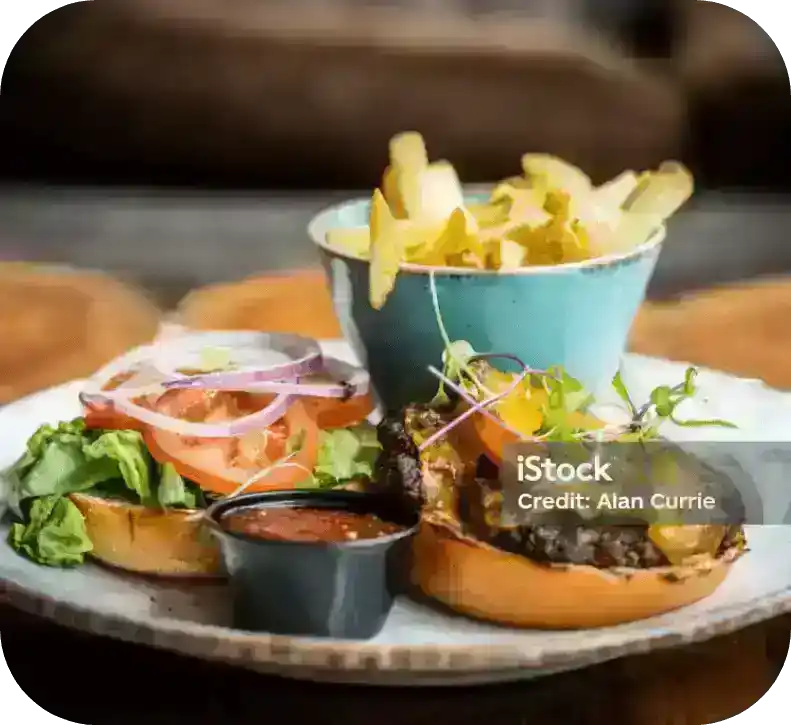
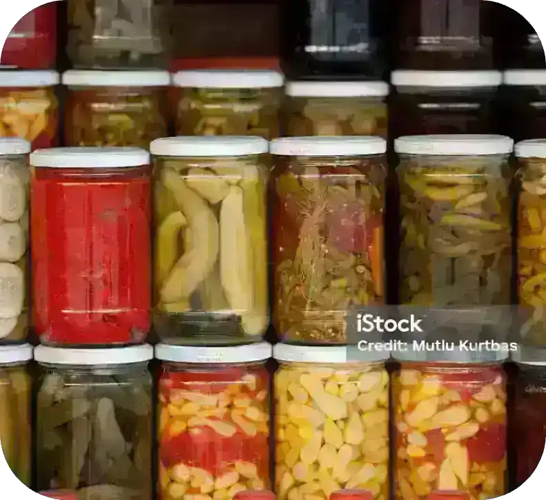

Restaurants, Wineries,
Cafe’s and More
Meaford and the South Georgian Bay area have plenty of dining options for you to enjoy. From casual cafes and friendly pubs to sophisticated restaurants and local wineries, you can find a variety of places to enjoy the region’s flavors.
Coffin Ridge Winery
Coffin Ridge Winery is a renowned winery located in the heart of the Grey County region in Ontario, Canada. It is situated atop the Niagara Escarpment, offering breathtaking views of Georgian Bay and the surrounding countryside. The winery is known for its unique wines crafted from cold-hardy grape varieties.
Georgian Hills Vineyards
Known for its commitment to producing high-quality wines, Georgian Hills Vineyards specializes in cool-climate varietals such as Chardonnay, Pinot Gris, and Gamay Noir. The winery’s picturesque location offers stunning views of the Niagara Escarpment, creating an inviting atmosphere for wine tastings, tours, and events.
The Roost Winery
The Roost grows, makes and serves serious cold climate wines for unserious occasions. Paired with soaring views over the Beaver Valley from the tasting room patio and restored barn. For the best experience reserve a Deluxe Tasting that includes cheese and charcuterie.
Station 87
Station 87 is located in the Meaford Firehall. Join us on the main level or upper-level dining room where you can enjoy our menu inspired by seasonal flavours. Join us on the rooftop patio, where you can enjoy panoramic views of Downtown Meaford. For more intimate gatherings, our private wine cellar offers a unique experience. Our Market side evokes a European marketplace. Grab an espresso and a sandwich made on our fresh bread while exploring all of the goods
Fabricca
Experience the quality of Fabbrica Thornbury’s regional Italian cuisine. Our menu features a diverse offering that is carefully curated to your taste. From the inviting dining room rooted by a wood-burning pizza oven to a buzzing patio, Fabbrica Thornbury is a rural gourmet retreat.
The Dam Pub
The Dam Pub offers a diverse menu featuring classic pub fare with a unique twist. Visitors can enjoy a wide selection of craft beers, wines, and spirits while taking in the cozy ambiance of the pub’s interior or relaxing on the outdoor patio. The Dam Pub’s friendly staff and welcoming environment make it a favorite destination for locals and tourists.
The Port Tavern
The Port Tavern Restaurant & Bar in Thornbury, Ontario, is your go-to for a classic blend of rugged tavern vibes and high-end dining., Crafted by the legendary Celebrity Chef Mark McEwan. Whether you’re basking on the 100+ seat patio or warming up by the fireplace during cooler months, it’s the perfect spot for every occasion.
Casero
Casero serves fresh Mexican food! They have two locations. Visit Casero Taco Bus in Sauble Beach, serving fresh tacos and margaritas from a vintage double-decker bus or relax at Casero Kitchen Table in Owen Sound on their licensed patio & full service dining room. Vegan and gluten free options are available.
Ted’s Range Road Diner
Ted’s Range Road Diner was established in 1987 by Ted and Kate Lye. Ted serves as the head chef, ensuring each meal is prepared with care. The diner offers a variety of dishes including wild game, seafood, and traditional options like prime rib. Live entertainment is featured on weekends, and breakfast is served daily.

Mudtown Station
Mudtown Station, located in Owen Sound near Meaford, Ontario, occupies a beautifully restored historic train station. Offering a varied menu of locally sourced gastropub-style dishes and an extensive craft beer selection, it caters to diverse tastes. With its welcoming atmosphere and quality cuisine, Mudtown Station is a popular choice for locals.
Heart’s Tavern
Heart’s Tavern, located in the village of Kimberley in the Beaver Valley, is a French and Southern European roadside tavern. The menu changes daily, with lots of seasonal and local produce, dry aged meat, seafood and an extensive wine list. Open year round, with two patios and our own garden in the summetime to enjoy the best of the scenic beauty the valley has to offer. Heart’s has a beautiful wine cellar with a wood burning stove for family dinners.
Marilynne Restaurant
Located in the heart of Markdale, Marilynne Restaurant is inspired by fond memories of family gatherings. Marilynne’s embodies the values of simplicity and connection to the land - fresh, nourishing, and made with love. Committed to farm-to-table dining, both in the restaurant and at home, Marilynne restaurant also offers a boutique marketplace featuring locally sourced goods.
Down Home
Down Home Farmhouse restaurant can be found in the rolling hills of Grey Highlands. Join them on Friday or Saturday evenings for an intimate 10 course meal showcasing the best of local, seasonal and foraged edibles. They also offer a wine pairing to compliment the meal, as well as a selection of local beer, cider and non-alcoholic options. Reservations are required - visit their website to book.

Gio and Frans
Pop in to Franny’s for some Southern Italian inspired home cooking. A love-based establishment with a daily ever evolving menu. Also enjoy private imported wines, sprits, and frankly the most fun you’ll have on the Meaford strip!
Shanny’s Kitchen
Located in Owen Sound’s River District, induldge yourself in upscale cuisine, inspired by Chef Shannon MacDougall’s lifelong passion for quality ingredients and culinary arts.
Savvy Co
Your go-to destination for everything from a delicious morning latte, an afternoon snack and refreshing beverage or enjoying vinyl beats or live tunes.
McGinty’s Cafe
Woman owned and operated cafe in the heart of Meaford! Offering a large selection of handcrafted beverages, sweet treats & delicious eats. We carry a variety of gluten free options and are continuing to grow our vegan options.
Thornbury Bakery Cafe
The Thornbury Bakery Café has been a landmark on the main street in Thornbury since 1901. Originally known for our Chelsea Buns, Cinnamon Buns, Chop Suey Buns and Butter tarts, our bakery is now known for our full breakfast and lunch menu items, specialty gluten-free and keto breads, and so much more. Our baker’s start in the very early hours of the night producing everything from scratch, 7 days a week.
Coffin Ridge Winery
Coffin Ridge Winery is a renowned winery located in the heart of the Grey County region in Ontario, Canada. It is situated atop the Niagara Escarpment, offering breathtaking views of Georgian Bay and the surrounding countryside. The winery is known for its unique wines crafted from cold-hardy grape varieties.
Georgian Hills Vineyards
Known for its commitment to producing high-quality wines, Georgian Hills Vineyards specializes in cool-climate varietals such as Chardonnay, Pinot Gris, and Gamay Noir. The winery’s picturesque location offers stunning views of the Niagara Escarpment, creating an inviting atmosphere for wine tastings, tours, and events.
The Roost Winery
The Roost grows, makes and serves serious cold climate wines for unserious occasions. Paired with soaring views over the Beaver Valley from the tasting room patio and restored barn. For the best experience reserve a Deluxe Tasting that includes cheese and charcuterie.
Station 87
Station 87 is located in the Meaford Firehall. Join us on the main level or upper-level dining room where you can enjoy our menu inspired by seasonal flavours. Join us on the rooftop patio, where you can enjoy panoramic views of Downtown Meaford. For more intimate gatherings, our private wine cellar offers a unique experience. Our Market side evokes a European marketplace. Grab an espresso and a sandwich made on our fresh bread while exploring all of the goods
Fabricca
Experience the quality of Fabbrica Thornbury’s regional Italian cuisine. Our menu features a diverse offering that is carefully curated to your taste. From the inviting dining room rooted by a wood-burning pizza oven to a buzzing patio, Fabbrica Thornbury is a rural gourmet retreat.
The Dam Pub
The Dam Pub offers a diverse menu featuring classic pub fare with a unique twist. Visitors can enjoy a wide selection of craft beers, wines, and spirits while taking in the cozy ambiance of the pub’s interior or relaxing on the outdoor patio. The Dam Pub’s friendly staff and welcoming environment make it a favorite destination for locals and tourists.
The Port Tavern
The Port Tavern Restaurant & Bar in Thornbury, Ontario, is your go-to for a classic blend of rugged tavern vibes and high-end dining., Crafted by the legendary Celebrity Chef Mark McEwan. Whether you’re basking on the 100+ seat patio or warming up by the fireplace during cooler months, it’s the perfect spot for every occasion.
Need More Info?
Feel free to contact us if you need help planning your stay with us at Back Forty Glamping.
Contact Us